Mission Control user guide
Tasks, agents, decisions, documents and delivery in Paseo. Updated October 7, 2026 with orchestrator workspaces, following the October 2 Talat meeting guidance and the October 1 roadmap and Review update; the wider functionality inventory was refreshed September 30.
This edition. The October 7 update adds orchestrator workspaces: a local workspace that drives another host gets that host's bubbles and a Host agents tab with its Workspaces, Attention, Tasks, Review and Docs. The October 2 update records Talat as the chosen meeting app and adds its Obsidian export setup and planned meeting intake. The October 1 roadmap and Review update builds on the September 30 functionality inventory. Some checkout changes still await independent review; this guide does not mean every host has the same build. Screenshots are real application captures from the previous edition and this conversation; their captions identify later changes. Fresh desktop capture was unavailable, and phone-device verification remains pending.
What Mission Control does
Paseo runs coding agents (Claude Code, Codex, GitHub Copilot CLI and OpenCode) in workspaces on one or more computers. Mission Control adds the layer on top: it turns work into tasks, starts agents on them in their own worktrees, collects the questions agents need you to answer, and gets finished work reviewed and merged.
See everything
Every host, project, workspace and agent in one place, with search, filters and collapsible projects.
Run tasks
Write down what "done" means, then start an agent on it in its own branch and folder with one click.
Answer in one place
Plan approvals, review decisions and permission prompts from every agent, in the Attention tab.
Review and merge
Risk-sorted file-by-file review with comments, then a guarded Merge into your main checkout.
Keep tools in order
MCP servers, rules, skills and tool search for every provider, plus updates, branch naming and dependencies.
Start the day
The Morning check reads your Jira or Azure DevOps sprint and imports the items you pick as tasks.
Current functionality
This is an inventory of implemented behavior in the local checkout, not a list of promised features. Host-local records, provider tools and forge sign-ins still determine what is available on a particular host.
| Area | What you can do | Boundary to keep in mind |
|---|---|---|
| Workspaces | Browse hosts and projects; search and combine workspace, project and native-label filters; fold projects; rename workspaces and agents. | Offline rosters are last observed. A native label is separate from task status and agent activity. |
| Project Git | See the default branch, use the compact Pull latest icon, and inspect auto-fetch state. Change branch and fetch preferences in plugin settings. | Pull latest uses guarded fast-forward behavior; a status icon does not prove that a fetch succeeded. |
| Tasks | Create tasks; use Board or List; filter active work; set status; start or resume a bound run; copy the exact task ID with an icon. | Tasks are assigned to a workspace. Delivered and closed tasks stay in history. |
| Task details | Read a task-status badge and separate latest update; expand compact activity rows; inspect decisions, Markdown artifacts, run snapshots and technical IDs. | The timeline is bounded recent history. A completion check means the event recorded completion, not that the current revision is approved. |
| Attention | Answer plan/review decisions and recorded questions; handle permission prompts; inspect findings, unsent answers and delivery results. | An idle agent is not automatically a request for help. Approval and permission are distinct records. |
| Review | Choose a change range, inspect diffs, mark files/blocks reviewed, send comments, open/reveal files or folders, copy absolute/relative paths, and confirm discard actions. | Human review markers are not the task's approval decision. The Review bubble opens the main workspace tab directly; device validation remains separate. |
| Docs | Browse the vault, preview/edit eligible Markdown, follow wiki or relative document links, and manage notes/folders or open Obsidian. | Missing or ambiguous targets show feedback. Unsaved notes must be saved or discarded before navigating. |
| Mission panel | See this workspace's Needs you, Tasks, Review and Agents sections; inspect task details; save their display order. | The section order belongs to this plugin installation. Task/review records require the matching host. |
| Agents | Browse parent/child trees and helpers; search and filter states; refresh; open chats and use reply, redirect, detach, archive or permission actions. The broom previews eligible families for manual cleanup. | A recorded run agent may be idle, missing or different from the currently active agent. Cleanup requires explicit selection and a fresh eligibility check. |
| Orchestrator workspaces | Link a local workspace to the remote host it drives with a host.json; use that host's Workspaces, Attention, Tasks, Review and Docs in a Host agents tab; list what is ready to review there and open its review. | Workspaces come from the remote host's Paseo. Attention, Tasks, Review and Docs need Mission Control on that host, in a version with this screen. |
| Morning check | Read sprint work through an agent, write a daily report, and import selected Jira/Azure DevOps items; use fixtures for local checks. | Real imports require the tracker tools and configuration on the relevant host; they do not change tracker records. |
| Delivery | Prepare guarded local Merge or draft Open PR actions, check PR state, and explicitly clean up delivered work. | Delivery requires the relevant approval and exact revision checks; it does not follow from a completed handoff. |
| Settings & setup | Inspect/install supported dependencies, manage supported MCP settings, review rules/skills, configure branch naming, delivery and host/project Intake and Planning guidance, and check plugin updates. | Capabilities vary by provider. Running sessions retain their loaded configuration; folder installs need their own update/reload workflow. |
| Agent-managed labels | Use a task-bound command to read, create/assign or remove native labels; apply a guarded lifecycle status. Nine workflow skills now carry that policy. | Live-tested with Paseo 0.10.2's exported internal client. Shared-workspace safeguards apply. This is not a background synchronizer or a new direct label-editing UI. |
Inventory basis: the existing guide plus the current task-flow, Docs, document-link, Markdown-preview, Mission, Project Git, Review-pill and workflow implementations. Labels additionally have live daemon receipts and 29 passing script tests. Those checks do not replace native visual testing.
Roadmap: toward an automated software factory
October 1, 2026 snapshot, with the Review improvements completed later in this session noted below. The detailed automation roadmap is optional local supporting material; this summary is embedded in the standalone guide.
The goal. Mission Control should automatically turn ready tasks into reviewed, deliverable work, with Paseo's native schedules keeping the process moving. You set priorities, answer genuine product questions and review results, without pressing Start for every task.
Current position: the manual workflow has many of the necessary parts. Reliable coordination between them is the main gap. Unattended operation is still planned. At the October 1 snapshot, the connected host had no saved agent profiles or schedules; this observation does not describe every host. This guide update enables no automation.
Tracker scope: each host uses either Jira or Azure DevOps tasks/work items. Planned intake will use that host's configured tracker, project and field/status mapping, preserving source links and task ownership.
Available now, next, and later
Use and test now
- Task/run records, criteria, manual Start and Resume, isolated worktrees.
- Lifecycle skills, validation evidence, independent-review instructions, decisions and explicit delivery.
- Readable activity, Markdown artifacts, Docs links, copy task IDs and workspace labels.
- Manual Morning check and selected Jira/Azure DevOps imports.
See the functionality inventory. Implementation and native-device verification are separate.
Start eligible work automatically
- Check readiness, authorization, tools and dependencies.
- Claim each task once and reconcile live agents before retrying.
- Route profiles and continue through checks, review and bounded fixes.
- Record timing and provide pause, capacity and escalation controls.
Connect these to native schedules, then prove the loop in a supervised pilot.
Add planning and scale
- Scheduled intake from each host's configured Jira or Azure DevOps tracker.
- Host-specific project queries, status mapping and source links.
- Dependencies, concurrency and explicitly authorized delivery automation.
- Sprint targets, task deadlines and forecasts from recorded history.
Add operational health visibility and verified lessons from rework.
Recent completion: Review. The bubble opens the main workspace tab directly, without the extra Open Review popover. File/folder actions now include opening/revealing, guarded discard, Copy path and Copy relative path. The latest change passed 177 client/review-action tests and typecheck and was reloaded. Native desktop/mobile verification remains pending. Using Review.
Build milestones
This is a proposed sequence, not committed delivery dates or completion percentages. Task/run records remain authoritative for progress and evidence.
| Milestone | Work to complete | Completion check |
|---|---|---|
| 1. Manual baseline | Exercise Start, Resume, checks, independent review and a decision. | One representative task has traceable evidence; Review opens, can be left and closes normally on the intended clients. |
| 2. Coordination | Readiness rules, exclusive claims, profile routing, automatic transitions, timing, pause controls and recovery. | Overlapping checks cannot create competing writers; working agents, waits, failures and uncertain actions are handled distinctly. |
| 3. Automatic starts | Scheduled dry run, then a supervised one-project pilot with one active implementation task. | Three to five small tasks reach user review without pressing Start, with independent review evidence and recoverable state. Delivery stays manual. |
| 4. Scheduled intake | Start with one host's Jira or Azure DevOps tracker; deduplication, freshness and changed/canceled requirement detection. | Imports use the correct host and project; no duplicates or silent changes to active scope; missing tracker access is visible. |
| 5. Planning and estimates | Sprint targets, optional task due dates (manual due dates are available now) and evidence-based completion ranges. | Forecasts include review/repair time, show limited history honestly and retain past predictions for accuracy checks. |
| 6. Broader operation | More projects and sources, controlled concurrency, repeatable environments, verified lessons and authorized delivery automation. | Several observed working days, including downtime and provider limits, with reliable recovery and no unauthorized delivery. |
When to start testing
Start manual testing now. Do not wait for sprint dates. The first automatic-start checkpoint is a ready task reaching user review with independent review evidence and recoverable state. It does not require scheduled tracker intake, a sprint dashboard or accurate estimates.
- Manual baseline — now. Use a small reversible task in a test project or isolated worktree. Record its task/run, actual revision and dirty state, commands, results and observed UI behavior.
- Scheduled dry run — after coordination exists. Report what would be imported, started, resumed, left waiting or escalated without dispatching work. Include duplicates, missing criteria, wrong context, dependencies and unavailable tools.
- Supervised pilot — before sprint features. One project, one active implementation task, three to five small tasks and manual delivery. Exercise overlapping checks, interruption, failed validation, review findings, unanswered decisions/permissions and offline hosts. New code after review requires fresh relevant verification.
- Unattended expansion — after the pilot passes. Observe several working days and set reliability thresholds from evidence. Limit new starts when the review queue grows, and verify pause and recovery controls.
Pilot settings still to choose: project/tasks, profiles, operating hours/timezone, cadence, concurrency, retry/repair limits, review-queue limit and delivery boundary. Morning intake plus daytime checks every 10–15 minutes, and two repair rounds before escalation, are proposals rather than active settings.
Profiles, schedules and independent review
- Paseo schedules wake the coordinator. Progress stays in task/run records and receipts so a fresh coordinator can recover after downtime. It checks live state before acting and records its start, wait, retry or escalation reasons.
- Paseo profiles configure the agents. Implementation and independent-review profiles need to be created, routed and applied at launch, including supported provider/model settings. A profile name alone does not establish reviewer independence or permission.
- OCR supports the reviewer. OpenCode Review's
ocr delegate previewselects scope andocr delegate ruleresolves rules; a fresh reviewer performs the review with Gortex context. The verdict must identify the revision and account for reviewed/excluded files. Missing required tools or context is a review gap, not a clean result. - Your review stays deliberate. A completed stage, idle agent or Done workspace label does not approve or deliver a task. Accepted work follows the project's authorized delivery route.
Host coordinators and a main-host supervisor
Recommended design · planned. Each host owns its tasks and agents. A supervisor on your main host watches progress across hosts and gathers the decisions and reviews that need you. This coordination layer still needs implementation and testing.
Main-host supervisor
Combines host health, task progress, capacity and review queues. Requests checks or pauses through the owning host instead of launching competing workers.
One coordinator per host
A durable role that fresh agents can perform. Uses that host's Jira or Azure DevOps, repositories and profiles to claim eligible tasks, advance checks/review and record waiting or recovery reasons.
Task agents
Implement, validate and review within the exact task/workspace binding. An independent reviewer examines the candidate and evidence before work reaches your review queue.
- One owner per task. Code enforces exclusive, time-bounded claims and rejects stale owners. Check the live agent before taking over an expired claim. Models provide judgment; code enforces transitions.
- Records survive agents. Existing task/run records and action receipts retain the host, workspace, agent and candidate revision. Reconcile uncertain sends before retrying.
- Capacity includes review. Start with one implementation per pilot project. Bound repairs/retries and limit new starts when reviews pile up or shared provider capacity is exhausted.
- Disconnected is not failed. Main-host downtime must leave authorized remote work running. An unreachable remote host shows its last confirmed state; do not start replacement work elsewhere.
- On track requires evidence. Show latest verified progress, stage, next action and waiting reason. Quiet agents are not automatically stuck; forecasts follow reliable timing history.
How schedules work together
Paseo schedules start fresh agents; heartbeats prompt an existing agent. Use schedules for routine coordination and bounded heartbeats for individual builds/investigations. Inventory existing jobs before adding any. These cadences are proposals, using configured operating hours and timezones.
| Job | Where / when | Responsibility |
|---|---|---|
| Morning intake | Each host, once each workday | Reconcile its tracker work with existing tasks; report source freshness. |
| Workflow check | Each host, every 10–15 minutes | Read live agents and records; claim, advance, wait or escalate. |
| Cross-host supervision | Main host, every 15 minutes | Watch missed checks, availability, capacity and review queues. |
| Daily summary | Main host, end of workday | Report verified results, decisions and next priorities. |
Every start uses the same guarded path. Intake, schedules, completion events and Hub requests reconcile the same task claim before acting. Do not repeatedly prompt a working agent. Record last success, next check and skipped/failed checks; reconcile missed wake-ups instead of replaying them blindly. Existing build/review schedules must join this policy rather than become competing task owners.
Use host-local profiles for coordinator, implementation and independent review responsibilities. Read their notes and apply the actual launch settings; profile names alone establish neither authority nor independence. See Paseo profiles.
Where Paseo Hub fits
Research checked October 1, 2026 against the Hub docs, product page and public API schema. The local Paseo 0.10.2 CLI supports Hub but reports not connected. No live Hub integration or remote-host setup was tested.
Recommendation: use Hub where it saves dispatch and event infrastructure. Mission Control still owns readiness, task claims, evidence, decisions and delivery. The first local scheduled pilot should work independently of Hub.
| Capability | Proposed use |
|---|---|
| Registered daemons | Explicit host/directory routing and presence. Daemons |
| External events and manual API dispatch | Wake the owning coordinator. The documented catalog does not establish native Jira/Azure DevOps intake; retain host-local tracker adapters. Triggers |
| Configuration and workflow execution | Reuse validation, conditional steps, structured results and time limits where supported. Current organization triggers and legacy project workflows use different formats; verify the chosen contract. Configuration · Workflows |
| Recovery and activity | Link Hub execution receipts to task runs. Recovery covers Hub-dispatched agents, not all locally started work. Recovery · Activity |
- Offline dispatch is not queued. Preserve pending intent and reconcile when the host returns. Offline behavior
- Duplicate starts still need prevention. Matching triggers can both run; delivery keys do not promise exactly-once dispatch. Keep claims and receipts. Matching · API contract
- Keep reviewers independent. Hub can continue a conversation and steer a busy agent. Select fresh execution for reviewers/coordinator wake-ups. Continuation
- Completion still needs evidence. Hub finishing an execution is not validation, approval or delivery; preserve OCR/Gortex review and revision-specific checks.
API gap: the inspected schema has no general host-health/run-history read endpoint. Use native state and Activity links initially. Its manual-run request is project-scoped; verify compatibility with the selected trigger format. Public API
Deployment: evaluate a self-hosted pilot on an always-available main host, or Hosted Hub for managed operation. Preserve its data. Enrollment and execution permission are separate; hub.execute also covers existing agents/workspaces. Start with a controlled host. Self-hosting · Hosted · Authority
Adoption and testing
Prove one local coordinator first, then add a second host and read-only main supervision before control requests. Evaluate Hub alongside that work: presence first, then one bounded coordinator trigger with recorded versions, host binding and execution IDs. Test overlapping schedules/events, lost responses, host/Hub downtime, recovery, pauses and fresh review. Each stage must have one dispatcher and produce no duplicate worker or unapproved delivery.
Testing need not wait for Hub or sprint dates. This roadmap update installs no service, creates no schedules and grants no execution permissions.
Timing, sprint ends and task deadlines
Record timing from the first pilot; forecast later. Track queue wait, first actual work to a review-ready candidate, review wait, and total cycle time from first work to verified delivery. Keep observed execution/check intervals and rework separate. Resuming must not reset the task's original start. Parallel agents' combined work time is not elapsed task time; missing data stays unknown.
Sprint end
The planning target for a group of tasks. A task without its own due date can use this as a derived target.
Task due date
An optional specific commitment. Distinguish a target from a hard deadline; do not copy the sprint end into every task's stored due date.
Forecast completion
A calculated range including checks, repairs and review wait. Show the supporting history and explain risks without moving commitments.
Update this roadmap after each testing stage with the date, candidate, passed/failed scenarios, evidence and next gate. The deployment limits and screenshot coverage still apply.
Talat meeting input
Selected now: Talat is the chosen meeting app and the user reports it is working well. Use its native Obsidian export on the machine attending meetings, then verify a finished note in the vault. The setup below and meeting workflow describe the path.
Still to build: meeting ingestion receipts, source-preserving context notes, project and daily-note links, and proposed task intake through the owning host's Jira or Azure DevOps configuration. Coordinators should reconcile exports and events without duplicate work. Native export does not implement these features, and they should not delay the first automatic-start pilot.
Key ideas
| Term | What it means |
|---|---|
| Host | A computer running Paseo, such as pc-864 or a remote machine. Mission Control shows every host Paseo is connected to. Tasks, reviews and settings belong to the host Mission Control is installed on. |
| Project | A repository Paseo knows, such as development-flow. |
| Workspace | A working folder in a project, with its own agents and terminals. Each task's worktree is a workspace too. |
| Agent | One Claude Code, Codex, Copilot or OpenCode session working in a workspace. |
| Task | A piece of work with a title and acceptance criteria ("what will prove this is done?"). Tasks are plain files in the vault. |
| Run | One recorded attempt at a task, linked to a run agent. Its updates can record different authors, including reviewers. It records a stage (Intake, Plan, Build, Checks, Review, Fixes, Delivery, Handoff), an outcome, a next action and evidence. |
| Workspace label | A native Paseo tag attached to the whole workspace, such as In Progress or Review. It is not an agent's label, a task status, or proof of completion. |
| Decision | A question an agent asks you: approve its plan, or accept its review. Review decisions come with findings you can send back to be fixed. |
| Worktree | A separate folder and branch for task work, which helps isolate changes. Several agents can still contribute to one task or share a workspace, so they must coordinate their ownership. |
| Vault | The folder that holds task records, run evidence and daily reports: C:\dev-vault. It's Markdown, so Obsidian can open it too. |
Getting around
Open Mission Control from Paseo's sidebar. The screen has two parts:
- The host rail on the left: search hosts, switch between All hosts and Online, and pick a host. Each host card shows whether it's online, its workspace and task counts, and a badge for anything that needs you. Drag the cards to reorder them.
- The main pane, with five tabs: Workspaces, Attention, Tasks, Review and Docs. Mission Control opens on Workspaces. Attention shows a count when something is waiting for you.
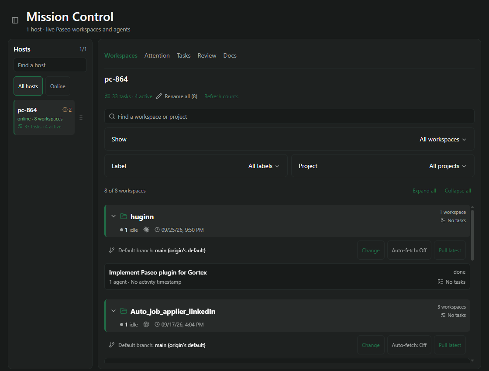
Tip. The small icon beside the title shows or hides Paseo's own sidebar, which gives Mission Control the whole window. On narrow screens and phones the panes stack instead of sitting side by side.
Rosters refresh every 20 seconds. If a host goes offline, its last known data stays visible and is marked as last observed.
Workspaces
The Workspaces tab lists every workspace on the selected host, grouped by project.
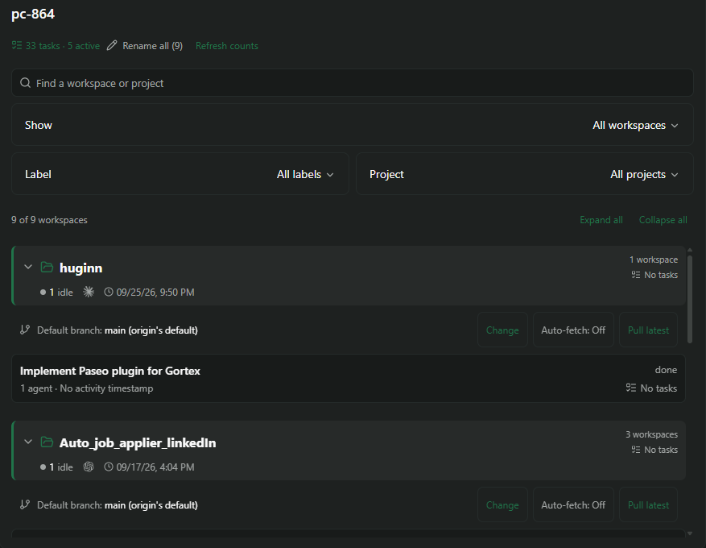
Search and filters
- Search matches workspace and project names.
- Show narrows the list: All workspaces, Running agent, Needs attention, Has tasks or Has active tasks.
- Label filters by Paseo workspace label, and Project by project. Project only appears when the host has more than one project.
- Clear filters resets everything. The count above the list (for example "9 of 9 workspaces") shows how much you're seeing.
The filters adapt to the space: one row on a wide window, Show on its own row with Label and Project side by side at medium widths, and stacked on narrow screens.
Projects and Git
Each project is a block you can fold with its arrow; Expand all and Collapse all do every project at once. The project header shows its workspace and task counts, its agents by state (running, idle, need you), the providers in use, and the last activity. Mission Control remembers which projects you folded.
Under each project header, the compact Git summary shows the default branch, a Pull latest refresh icon and an auto-fetch state icon. The branch override and auto-fetch switch are in Settings → Plugins → Mission Control → Project Git:
- Default branch shows the branch new task worktrees start from, normally origin's default. In Project Git settings, select the project and use Change to choose an override.
- Auto-fetch keeps origin's branches up to date in the background.
- Pull latest fast-forwards the default branch to origin. It never merges or rewrites anything; if a fast-forward isn't possible, it tells you why.
A new task worktree always starts from the latest version of the default branch on origin. A project without a remote starts worktrees from its current branch instead, and the Git bar says so.
Renaming workspaces and agents
New workspaces and agents often get unhelpful names. Rename all (N) at the top of the tab opens Rename workspaces for the whole host; Review names on a workspace page does the same for that workspace's agents.
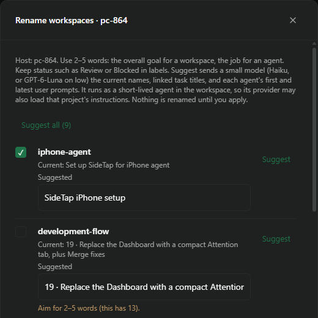
- Press Suggest on a row, or Suggest all. A small, fast model reads the current names, the linked task titles and each agent's first and latest prompts, and proposes a 2 to 5 word name.
- Edit any suggestion, and tick the rows you want. Names that are too long get a gentle warning.
- Press Apply selected. Nothing is renamed before this, and Undo puts the old names back.
The workspace page
Click a workspace to open its page. It combines the agent tree with a compact list of linked work; completed tasks no longer dominate the page.
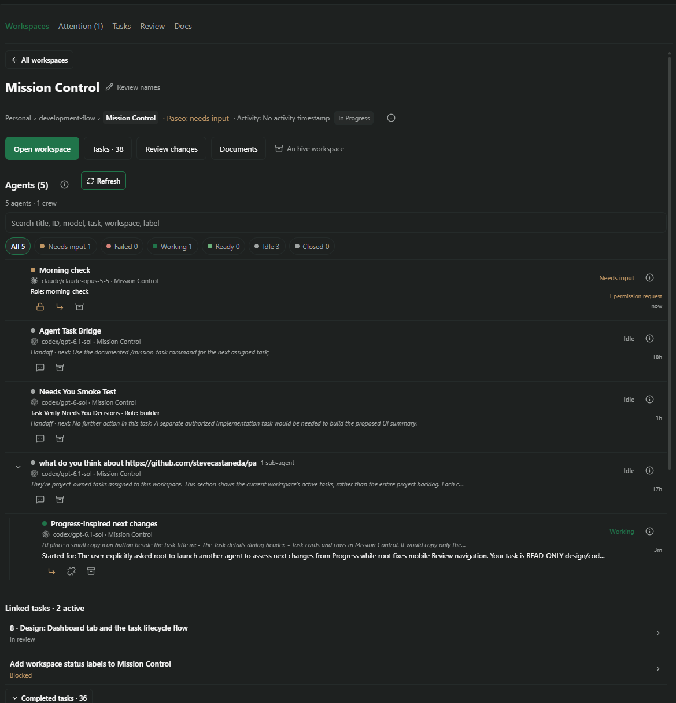
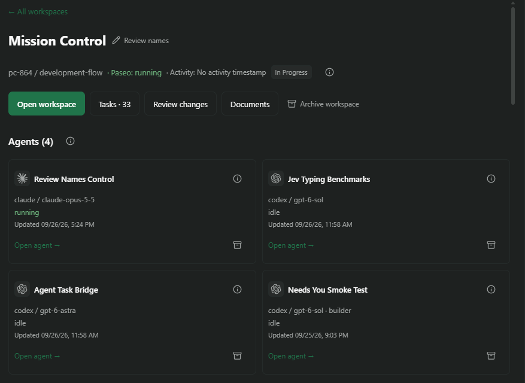
- Header: host and project, Paseo's status for the workspace, last activity, and labels. Open workspace jumps to it in Paseo; Tasks, Review changes and Documents open the matching tab for this workspace; Archive workspace archives it after a confirmation.
- Agents: the workspace's agents as a tree, the same one as the Agents panel: each agent's provider and model, state and age, with sub-agents under their parents (see Sub-agents).
- Terminals: appears only while the workspace has an active terminal.
- Linked tasks: active assigned tasks appear first as compact, clickable title/status rows. Delivered and closed work is grouped under Completed tasks, collapsed by default. Open a row for its task, or use the header's Tasks shortcut to view and add work. Long internal IDs are no longer the main label.
- Morning check: at the bottom; see Morning check.
Sub-agents
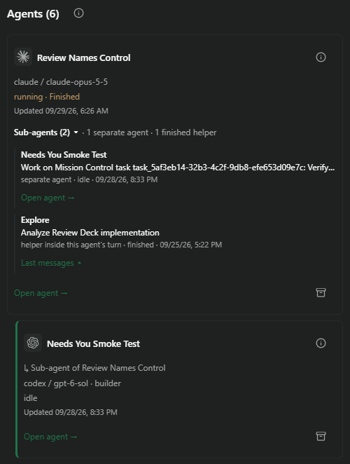
Agents can start two kinds of sub-agent, and Mission Control shows both with the agent that started them:
- Separate agents: a full Paseo agent that another agent started. It has its own chat and appears in agent lists.
- Helpers: short jobs that run inside an agent's turn, such as Claude Code's Agent tool (for example "Explore" or a fresh review). They have no chat of their own.
Agent cards on the workspace page, and task cards in the Tasks tab and the Mission panel, get a Sub-agents (N) row when there are any. Collapsed, it says how many there are and how many helpers are running ("2 helpers running"). Open it to see each sub-agent's name, what it was started for (a helper's description, or a separate agent's first prompt), its kind, status (running, finished, idle, error or stopped) and time. Separate agents have Open agent; a helper's Last messages shows its last few messages. Finished helpers stay a count until you open them.
Where a separate agent appears without its parent, for example because the parent works in another workspace or is archived, a line under its name says whose it is: Sub-agent of <parent> · <the parent's task> · <project / workspace>. Click it to open the parent. If the parent agent no longer exists, the line says so and isn't a link. In lists that include both, the sub-agent sits under its parent instead. The same line appears in the agent choice for sending review comments and in the Review names dialogs.
Helpers are read from this host's Paseo, so they appear only for the host running this Mission Control. On other hosts, or on a Paseo that can't list them, the row shows separate agents only.
In the agent tree (the Agents panel, the workspace page and the Mission panel), a sub-agent sits under its parent on a rail, and the parent's row counts its sub-agents and helpers. A separate agent's Started for line shows the prompt it was started with, and its task's number and title.
Looking never wakes a stopped agent. Paseo restarts a stopped agent to read its chat or list its helpers, so Mission Control asks only about live agents, checking each one's status with Paseo first. For a stopped agent, press Show what it was started for to read it on purpose.
Tasks
The Tasks tab shows the tasks of one workspace (pick it first, or use Change workspace). It opens on the Board; List gives a compact list instead, and Mission Control remembers your choice. Search with Find a task, and tick Active only to hide delivered and closed work. The narrow Tasks panel inside a workspace always starts on the list.
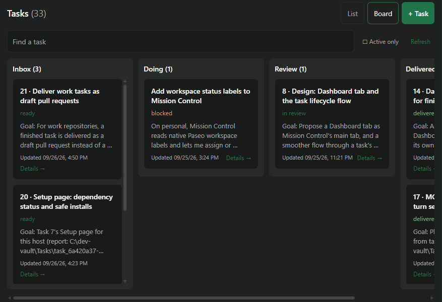
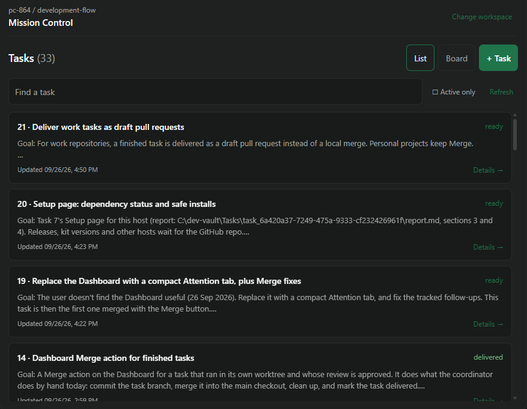
Creating a task
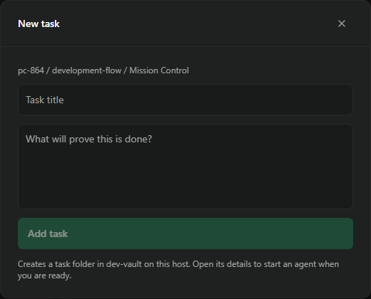
- Press + Task.
- Give it a short title, and write the acceptance criteria: what must be true when it's finished, and how you'll check it. Up to 4,000 characters.
- Press Add task. Mission Control creates the task's folder in the vault. Nothing starts yet.
Tasks can also come from Jira or Azure DevOps through the Morning check; those carry their ticket and an Open ticket link.
Due dates
Open a task and enter a Due date as YYYY-MM-DD, then press Save; Clear removes it. Cards show Due tomorrow, Due Oct 22 or Overdue, highlighted when the date is three days away or closer, and tasks with the earliest due date come first in each list and column. An agent started or resumed on the task is told the date and asked to say early if it can't finish in time. Due dates aren't imported from the tracker yet, and sprint forecasting is still planned.
Starting an agent
Open a task in the Tasks tab to manage its criteria, status and Agent workflow launcher. The compact Task details / View full details actions open its activity, decisions and artifacts; that reading view is separate from launching an agent.
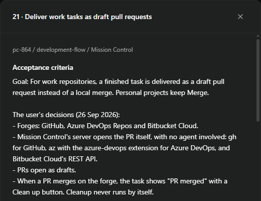
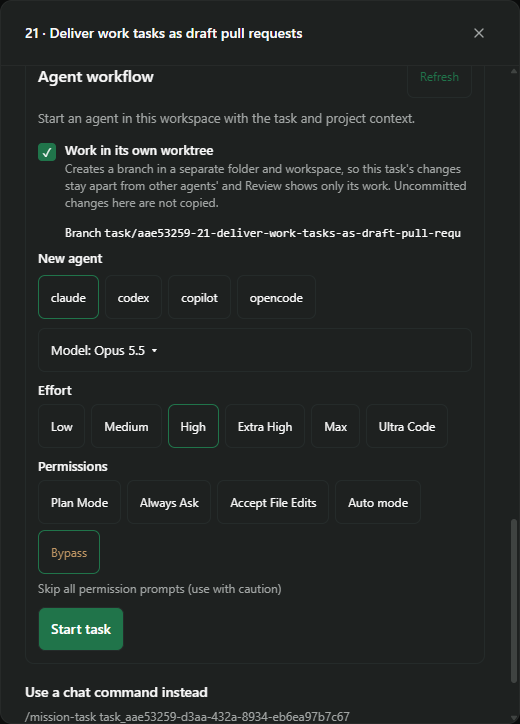
- Keep Work in its own worktree ticked (the default for Git projects). The task gets its own branch and folder, and Review then shows only its work. The Branch line shows the exact name first; it follows your branch name templates.
- Choose the provider (claude, codex, copilot or opencode) and model.
- Choose the effort (how hard the model thinks) and the permissions. Bypass and Full Access skip permission prompts and are shown in amber as a reminder.
- Press Start task. The first message gives the agent the task, the project's profile, and the Development Flow skills it follows.
Slow starts. Creating a worktree can take a while. If it takes more than about 20 seconds, the panel shows "Starting the task…" and updates by itself when the agent is running.
Prefer typing? Use a chat command instead shows /mission-task <task ID>; Copy command and paste it into any agent's chat.
Following a run
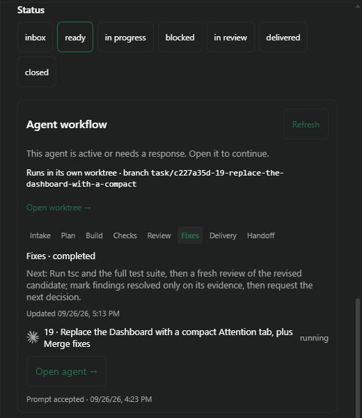
- Task status (inbox, ready, in progress, blocked, in review, delivered, closed) is the stored task record. The compact view makes it a badge; managing it is separate from recording an event or assigning a workspace label.
- Latest update is the most recent run's recorded stage/outcome. Next action shows what was recorded next. Neither a later stage nor a completion check establishes approval, validation of today's revision or delivery.
- Agents may include the linked run agent, other task-linked agents and recorded update authors. Use the named agent's action to choose a chat. Open run agent specifically opens the agent ID recorded on that run; it does not choose whichever agent is currently working. Open worktree opens the associated workspace.
- When the agent is idle, Resume task sends it the latest task context. Continue launch finishes a start that was interrupted, without starting a second agent.
- Open task documents shows the task's files in the Docs tab.
Activity, decisions and artifacts
The task header shows its title, a task-status badge, a separate Latest update, the recorded Next action and an update time. A task can be In review while its latest update says Handoff completed: the handoff happened, but the task still awaits review.
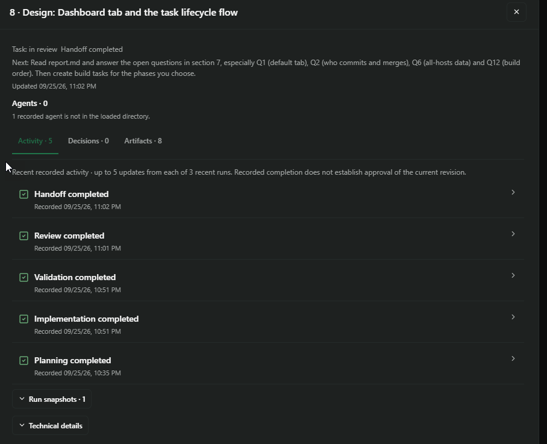
- Activity: select a row such as Planning completed, Implementation completed or Handoff completed to reveal the recorded author, summary and evidence. The long report is collapsed by default. A checkbox means that event recorded completion; waiting and blocked use different indicators.
- History limits: the detail view reads up to five updates from each of three recent runs. Older events can be omitted. Expand Run snapshots or Record issues when you need to inspect missing/conflicting records.
- Decisions: inspect the task's open and recent plan/review decisions and their findings. An activity row named Review completed is not a substitute for this decision record.
- Artifacts: select a readable document label to preview its Markdown. Headings, emphasis, lists and tables are rendered; metadata is hidden from the normal reading view. Raw source shows the original text; Technical details reveals the underlying path. Run records are grouped separately. Use Docs to edit eligible documents.
- Evidence: expand its count to inspect references. A document not included in this bounded view is reported as not included; that is not proof that the file does not exist. Offline or failed refreshes are shown explicitly.
- Agents: more than one agent can be associated with a task. Details try to resolve recorded agents beyond the loaded directory and keep a readable fallback when details are unavailable. A compact run shortcut can still show an agent if the loaded roster has no name; it represents that run's stored agent ID.
In the compact task list, expand the task row to read its Latest recorded update, then choose View full details for the complete reading view. Activity preview loads when expanded. Current live-agent state is distinct from recorded run state.
No invented progress. The guide and UI do not derive a success percentage, effort estimate or ETA from stage position. Progress-plugin row minutes are estimates; recorded elapsed time is a different fact.
Referencing a task in chat
Press the copy icon beside the task title in the detail-dialog header or task card/row. It copies the complete stored task ID, such as task_f278a57f-1e8a-4ac8-ba17-7b055c773013, with no task id: prefix. Paste it into a chat with your instruction so the agent can resolve the exact record. Task titles stay readable while IDs remain stable internally.
Copying an ID does not launch or bind an agent. To use the documented task workflow, launch from Tasks or use /mission-task <task ID>; the bound host, project and workspace still need to be verified.
Attention
Everything waiting for you, in one list. The tab's count tells you how many things are waiting. Permission prompts come from every online host; decisions, questions, tasks to deliver and pull requests come from the host Mission Control is installed on. Show recent decisions lists the last ones you answered.
Every card under Needs you explains itself, so you rarely need to open the chat:
- The task line names the task (number and title) and where the agent runs: host, project and workspace.
- Where it's at says where things stand, in the agent's own summary. If the agent didn't write one, the card quotes its latest message, marked as a quote. Nothing is made up.
- Needs from you says in one sentence what the agent is waiting for, with its recommendation when it gave one.
- Conversation shows the agent's last few messages and steps, and Open agent is a small link for when you want the whole chat.
Looking never wakes an agent. Paseo restarts a stopped agent to read its chat, so Attention reads a chat by itself only while the agent is live. For a stopped or failed agent, it reads the chat only when you open Conversation.
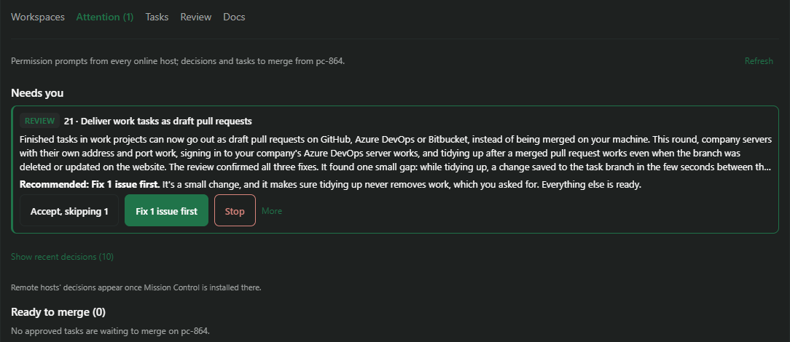
Decisions and findings
Agents don't leave their questions buried in the chat. For a plan or a review they request a decision, and for anything else they record a question (see Waiting for you). There are two kinds of decision:
- Plan decisions: approve the agent's plan before it builds, or send it back.
- Review decisions: an independent reviewer checked the work; accept it, or send its findings back to be fixed.
Every card is written for you, not for engineers:
- The first lines say what was built and what the review found, in everyday words.
- Recommended gives the agent's advice with a one-line reason, and its button is highlighted.
- The buttons say what they do. For reviews: Accept (it reads Accept, skipping N when open issues would be skipped), Fix N issues first and Stop. For plans: Approve plan, Change the plan and Stop.
More opens everything else:
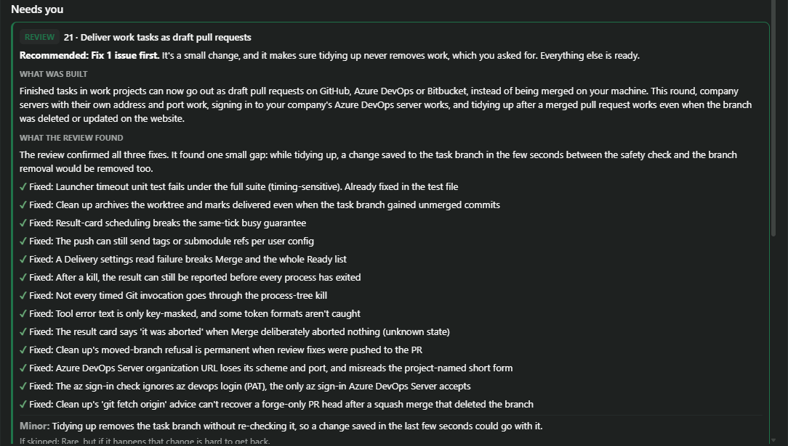
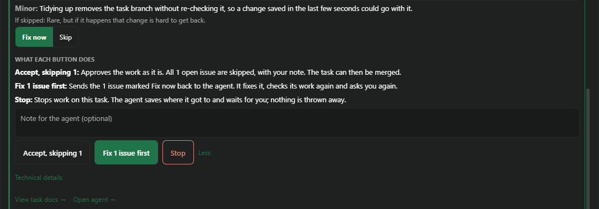
- Each open issue is described in plain words, with what happens if you skip it and its own Fix now / Skip choice. The choice starts on the agent's recommendation, and the buttons' labels follow your choices.
- What each button does spells out the result of each answer before you press it.
- A note for the agent is optional. Technical details holds the reviewer's full report, the evidence and the file references.
A note is never sent without you seeing it. If your answer needs one, for example because it skips issues or stops the task, the card first shows the exact action and note, and you can edit them. Your answer is saved first and sent to the agent when it's idle. If the agent is busy, the answer shows Saved, not sent with Send to agent.
Findings are verified. Approving is refused while earlier findings are still waiting to be verified. A fix only counts once a fresh review confirms it, so an agent can't mark its own work as fixed.
Waiting for you
Two kinds of card appear here, each with a Reply box that sends your answer straight to that agent on its host:
- A question: a Mission Control task agent that stops to ask you something records it with a short "where it's at" and "what I need". The card leaves once the agent has your reply.
- An error: an agent that Paseo reports as failed. The card says what failed, from Paseo's error message.
An agent that simply finished its turn doesn't get a card, because Paseo can't tell a question in the chat from a normal finish. Only recorded questions and errors are listed.
Permission prompts
When an agent needs permission for a tool, the prompt appears here with the task line, where the agent is (its latest message), and a Wants to line in plain words, for example the command it wants to run. The buttons are the agent's own choices (for example allow once, allow always, or deny), and Details shows the full command. Prompts also appear in the Mission panel of the agent's workspace.
Ready to deliver
A task whose review you approved, and which ran in its own worktree, appears under Ready to deliver. Until it's delivered, its changes live only on the task's own branch. How it's delivered depends on its project's Delivery setting: Merge into your main checkout for personal projects, or Open PR for work repositories.
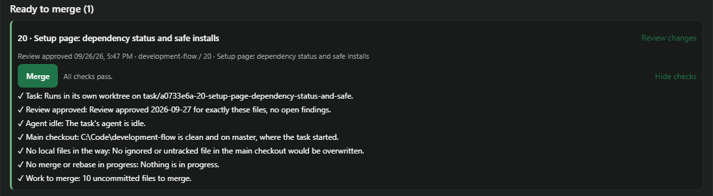
Merge
Merge brings the task's changes into your main checkout:
- Commits the task's changes on its branch.
- Merges that branch into master, keeping a merge commit.
- Archives the task's workspace and deletes its branch.
- Marks the task delivered and tells its agent.
The commit message follows the repository's own conventions. When its paseo.json has commit message instructions (the same ones Paseo's Commit button uses, such as Conventional Commits), a small, fast model writes the message from the task's title, ticket and handoff summary. The confirmation shows it, and you can edit it before anything is committed. Without instructions, or if writing fails, the message is the task's title and ID.
Before anything happens, it checks that it's safe, and says exactly why if it isn't:
- the files still match what you approved (a fingerprint is recorded when the review is requested);
- the task's agent is idle;
- your main checkout is clean, on the branch the worktree started from, with no merge or rebase in progress;
- the merge wouldn't overwrite any local file, including ignored files such as
.env; - the branch has something to merge.
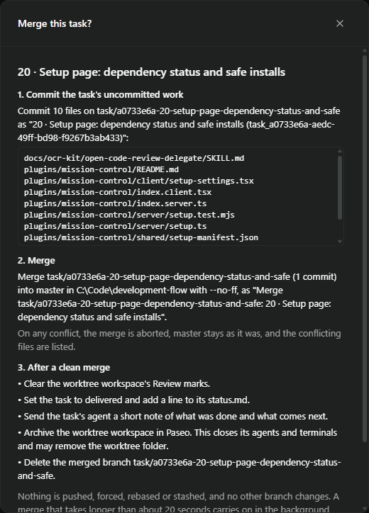
When the merge is quick, the dialog then shows each step's outcome, including anything that was skipped. A merge that takes longer than about 20 seconds (for example with slow Git hooks, or while Paseo archives the worktree) carries on in the background:
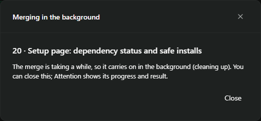
If Git reports a conflict, Merge undoes it and leaves master as it was. It shows Merge needs you with the conflicting files; the task's work stays committed on its branch, ready for you (or the coordinator) to merge by hand. Merge never pushes, rewrites history or touches other branches.
After merging Mission Control itself, reload the plugin (Settings → Plugins → Reload) to see the changes.
Open PR
For a project that delivers by pull request, Open PR takes the place of Merge. It runs the same checks, except the ones about your main checkout, which it never touches. Its confirmation lists:
- the commit of the task's work;
- the push of the task's own branch, never forced and with no tags;
- the draft pull request: which forge, the target branch, the title and the description.
The title and description follow the repository's paseo.json pull request instructions in the same way, and you can edit both in the confirmation. The ticket key stays in the title. If the repository has a pull request template, the model gets it too and keeps its sections. Only the task's title, ticket key, handoff summary, the instructions and that template are sent, never other files or secrets. Without instructions, the title comes from the Delivery title template and the description from the template plus the task's summary.
Mission Control then opens the PR itself, as a draft: with gh for GitHub, az for Azure DevOps (linking the work item), and Bitbucket Cloud's web API. It uses the sign-ins those tools already have, and never stores or shows a credential. The task moves to In review, and its PR link and number are saved on the task.
Pull requests and Clean up
Attention also lists the pull requests it opened, with their state: draft, open, merged or closed. Refresh or Check status reads the latest state from the forge.
- When a PR is merged, it shows PR merged with Clean up. After a confirmation, this archives the task's workspace, deletes its local branch and marks the task delivered. Nothing is cleaned up without you.
- Clean up refuses, and changes nothing, if the local branch has work the PR didn't include, or the worktree has uncommitted changes. Squash merges, branches deleted on the website, and review fixes pushed to the PR are all fine.
- A PR closed without merging offers no cleanup.
Every Merge, Open PR and Clean up leaves a result card in Attention, with each step's outcome, until you press Dismiss.
Review
Review shows what a workspace has changed, file by file. Pick a workspace, or press Review changes on its page. From a chat, press the Review bubble once to open the main workspace tab using freshly resolved agent/workspace context. The extra Open Review popover is removed; switching away or closing the tab does not trigger navigation from a mounted launcher. The /review command also targets the main workspace tab. Automated regression checks pass; native desktop/mobile behavior still needs device verification.
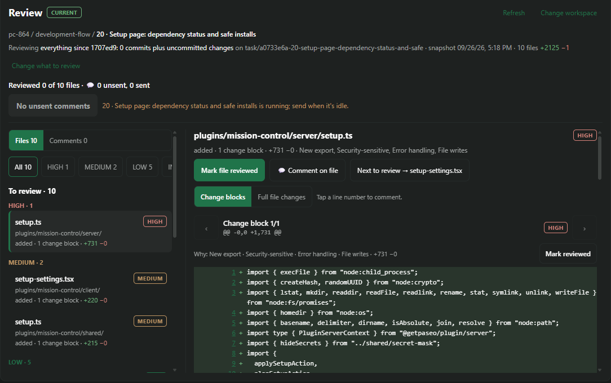
- The header says exactly what's being reviewed, for example "everything since this task branched: 3 commits plus uncommitted changes", with a snapshot time and line counts. Change what to review picks a different range; Refresh takes a new snapshot.
- The file list is sorted by risk: HIGH, MEDIUM, LOW and INFO, with a filter for each. Every file shows its change blocks and lines added and removed.
- A file shows why it was flagged (for example new export, security-sensitive, error handling, file writes), then its change blocks or the full file. Step through blocks with the arrows.
- Mark reviewed ticks off a block, and Mark file reviewed a whole file; the header counts your progress. Next to review jumps to the next file.
- Comments: tap a line number to comment on it, or use Comment on file. Comments collect as unsent, and you send them to the agent together once it's idle.
- Slow hosts: where every Git command starts slowly (for example, security software inspecting each launch), Review keeps reading in the background. The bubble shows Review · counting… and the tab shows READING CHANGES until the scan finishes; workspaces on the same checkout share one scan. Review · unavailable means Mission Control itself couldn't be reached, for example during a plugin reload.
Docs
Docs is a file browser and Markdown editor for the vault. The shared preview now renders readable task/document references instead of printing raw wiki-link syntax and GUID paths.
Reading linked tasks and handoffs
[[Tasks/task_…/task|Task title]]displays Task title as a document link. The current-task shorthand[[task_…|Task title]]also resolves the task document. Full stored IDs are used under the readable label.- A linked handoff opens its exact run's
handoff.md, not the newest handoff from a different run. References can use vault-relative paths, optional.md, or supported relative Markdown document links. - Clicking a resolved reference selects the matching document in Docs on the same host. Missing/ambiguous targets show feedback rather than picking an arbitrary basename or switching to an unrelated workspace.
- Daily handoff rows matching the recorded title/date/status/link format get a separate bold title, readable recorded date/status and handoff link. Nested summaries are indented and wrap beneath their parent.
- Markdown tables show aligned columns and can scroll horizontally. Wiki-link alias pipes, escaped pipes and pipes inside code are kept within their cells. Code fences and inline code stay literal; frontmatter is hidden in preview.
- This is a focused Markdown reading view, not a full Obsidian renderer. External links and image references remain text in the preview; vault-document navigation is the supported clickable behavior.
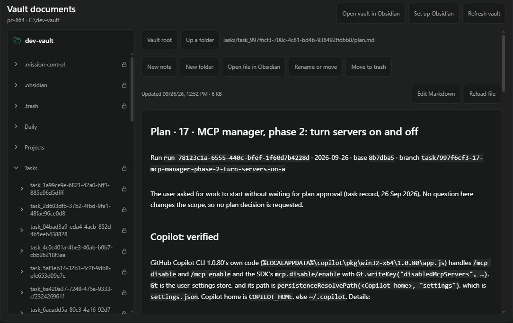
- Browse
C:\dev-vault:Tasks(one folder per task),Projects(project profiles),Daily(Morning check reports) andTemplates. A lock marks items you can open but not rename, move or delete from here, such as task folders and Mission Control's own data. - A task folder holds
task.md,status.md,notes.md, the agent'splan.md, and arunsfolder with each run's decisions, reviews, test logs andhandoff.md. - Open a file to preview it. Edit Markdown edits eligible files; New note, New folder, Rename or move and Move to trash manage eligible entries. Save or discard an unsaved note before changing files or following a document link. On compact screens, Browse files shows the tree and selecting a file closes it.
- Open vault in Obsidian and Open file in Obsidian hand over to Obsidian if you use it; Set up Obsidian registers the vault.
Talat meetings in Obsidian
Talat is our chosen meeting app. The user reports capture is working well; vault export still needs to be configured and verified on each meeting host. Follow the Talat Obsidian setup:
- In Talat, open Settings → Exports → Post-meeting actions and add a Markdown file action.
- Choose
C:\dev-vault\Meetings\Talat, optionally with the{year}/{month}subfolder rule. - Start with Frontmatter note. Preview the template and retain the summary, timestamped transcript and meeting notes you need.
- Finish a short meeting. Confirm the exported note opens in Obsidian and in Mission Control's Docs browser. Audio retention is optional.
Keep Talat exports as source records. Planned processing will write separate context notes in Meetings/Processed and link the correct project and daily note. The proposed ingest-meeting workflow and automatic meeting-to-task intake are not implemented. Proposed actions still need clarification and normal project authorization.
Configure this only where you attend meetings. Plugin installation does not set up Talat. See the full meeting workflow for ownership, backfill and verification details.
The Mission panel
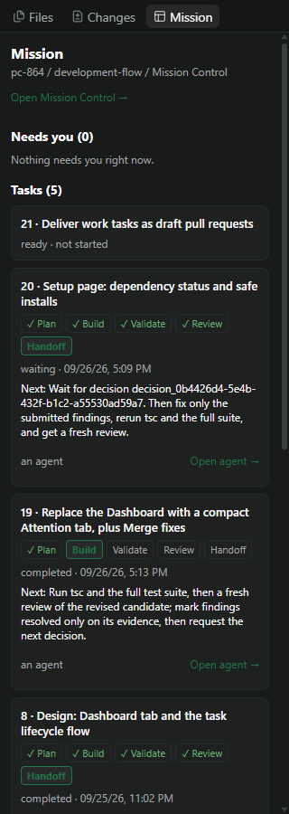
Inside any Paseo workspace with agents, the Mission button in the header opens the Mission tab in Paseo's right-hand panel. The button reads N need you when a prompt or decision is waiting. You can also type /mission in a chat.
- Needs you: this workspace's permission prompts and decisions.
- Tasks: compact title/status summaries, latest recorded update and next action, an icon to copy the task ID, Task details and the named run-agent shortcut.
- Agents: the workspace's agents as the same tree as the Agents panel.
- Open Mission Control jumps to the full view.
Use the Customize sections settings icon in Mission to move Needs you, Tasks, Review and Agents up or down. The order is saved for this installation; Reset order restores the default. A failed save is shown with Reload layout.
The Agents panel

A workspace panel that shows every agent working in the workspace, and what each one needs. To open it, add a new tab in a workspace's Explorer and pick Agents, or run Open Agents from the Command Center. A setting (off by default) opens it once for each new workspace. It's modelled on the Agent Crew plugin, and goes further.
- The tree: agents started by another agent sit under their parent on a collapsible rail, with a count of descendants. A sub-agent working in another workspace stays with its parent's group, and a parent from another workspace shows dimmed, for context. The header counts the agents and the crews (parents with sub-agents).
- Each row: a state dot and label, the agent's name, provider and model, workspace, its Mission Control task and role, a one-line "where it's at", the last error if any, and how long ago it was active. Helpers that Claude runs inside a turn appear under their agent too.
- Filters and search: chips with counts for Needs input (permission prompts, recorded questions and open decisions), Failed, Working, Ready, Idle and Closed, and a search over name, ID, provider, model, task, workspace and labels.
- Actions, each confirmed in plain words first: Open; Reply to an idle or waiting agent; Interrupt and redirect a running one (the confirmation says the current turn stops); Detach a sub-agent from its parent; Archive (it says what happens to the sub-agents); and Allow or Deny a pending permission.
It updates live from Paseo, with a 30-second backstop, and never wakes a stopped agent (see Sub-agents).
Agent cleanup New
The broom beside the pencil checks one agent's family. The broom in the Agents heading checks every family in that workspace. Both open a preview; nothing is archived when you press the broom. The same controls appear in the Agents panel, workspace page and Mission sidebar for the host running this Mission Control.
- Review Eligible, Keep and Couldn't verify. Each family explains its result and lists how many conversations will archive, detach or remain unchanged.
- Tick the eligible families you want, or press Select finished task families. Unlinked conversations require an individual tick. Nothing is selected by default.
- Press Archive selected. Mission Control checks again; changed or newly busy families are skipped. Results stay visible even after archived rows disappear. Show recent cleanup opens this workspace's saved receipts.
Cleanup keeps families with active agents or helpers, unfinished tasks, pending permissions, questions or decisions, open chat tabs, or pinned workspaces. Missing records and failed checks appear under Couldn't verify. Archived conversations retain their chat history; task records, workspaces and branches remain in place.
Set retention in Settings → Plugins → Mission Control → Agent cleanup on each host. Defaults are 7 days after the latest activity or task update for delivered/closed work, and 14 days for unlinked conversations. Both accept 1–365 days. Cleanup runs only when you confirm a selection.
A preview lasts five minutes. Use Scan again after it expires or after an uncertain result. A merged pull request offers Check delivery cleanup, which opens the existing delivery checks before any workspace archival, branch deletion or task-status change.
Orchestrator workspaces New

An orchestrator workspace is a workspace on this host where you talk with one agent that drives another host's work. Its folder holds a host.json that names that host, for example in C:\Code\Orchestrator\Acme:
{ "schemaVersion": 1, "label": "Acme", "serverId": "srv_…" }Use the host's name and Paseo server ID as this app knows them. The file holds no secrets. A vault's own host.json, which names its host with hostId, isn't mistaken for one.
- Bubbles: every open chat in the workspace gets two bubbles above the message box. Acme agents counts the host's agents that need you, and Review counts its workspaces that are ready. The counts come from the remote host, read at most once a minute; when the host is unreachable the last counts stay. They replace the usual Review bubble, which would review the orchestrator's own folder.
- Host agents tab: Acme agents opens a Host agents tab with the same menu as the main page, for that host:
- Workspaces: the host's projects and workspaces, with the Workspaces page's search, Show, label and project filters (without the task filters) and collapsible projects. Each workspace shows its status, labels, agents, last activity, branch, lines added and removed, uncommitted or unpushed work, and pull request. Choose one to see its agent tree, with Open review, Tasks and Open workspace.
- Attention: the host's permission prompts, questions and plan or review decisions, with Merge or Open PR for tasks ready to deliver.
- Tasks: the chosen workspace's tasks from the host's vault, with Start and Resume.
- Review: Mission Control's Review of the chosen workspace on that host, with its diffs, marks and comments. With no workspace chosen, it lists what's ready.
- Docs: the host's vault: task folders, handoffs and reports.
- Review list: the Review bubble opens the list of what's ready on that host. Workspaces labelled Review come first, then other workspaces with changes whose agents have all stopped, except ones labelled Done or Paused. Each card shows the branch, changes, pull request and its checks and review, and the latest agent. Open review shows that workspace in the Review tab; Open workspace takes you to it on that host; Open agent opens its latest agent; Show agents shows its agent tree.
Attention, Tasks, Review and Docs come from Mission Control on that host, read through its own copy running in your Paseo app, so they need Mission Control installed there and a version with this screen. When it's missing, outdated or the host is offline, the tab says which. Workspaces that Paseo sends without an activity time now show their latest agent's activity, or when they entered their current status, here and on the Workspaces page.
Morning check
The Morning check starts your day from your ticket tracker. It's at the bottom of a workspace page, for projects set up with Development Flow.
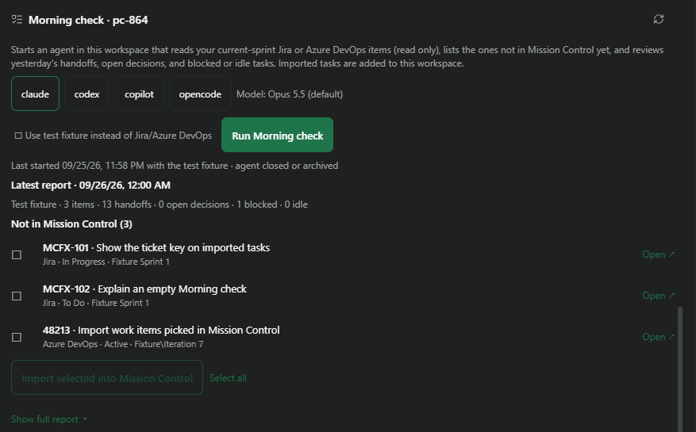
- Pick a provider and press Run Morning check. An agent reads your current-sprint items in Jira or Azure DevOps with its own MCP tools. It only reads; it never changes the tracker.
- It writes a report to
C:\dev-vault\Daily, and also reviews yesterday's handoffs, open decisions, and blocked or idle tasks. - Tick the items you want and press Import selected into Mission Control. Each becomes an Inbox task titled
KEY · title, with the ticket's criteria and a link back. Importing the same item twice doesn't create a duplicate.
Where it runs. Jira and Azure DevOps are connected on your work hosts, so real imports need Mission Control on those hosts. Use test fixture runs the same flow with sample items.
Settings
Mission Control's settings are in Paseo under Settings → Plugins → Mission Control. Each screen describes the host chosen in Paseo's host picker. The main settings page now includes Project Git: select a Git project to change its default-branch override, set auto-fetch, or Pull latest. The compact summaries elsewhere show those saved preferences.
Updates
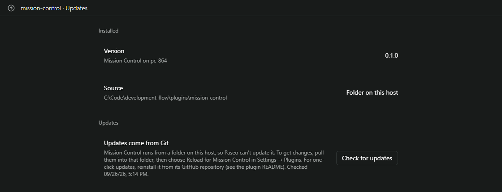
Shows the installed version and where Mission Control was installed from, and checks for a newer version when you open it or press Check for updates. For an install from Git, Update asks for confirmation, checks again that it's the version you reviewed, and lets Paseo build and reload it. Nothing updates automatically. A folder install (as on pc-864 today) updates by pulling into the folder and reloading the plugin.
Branch names
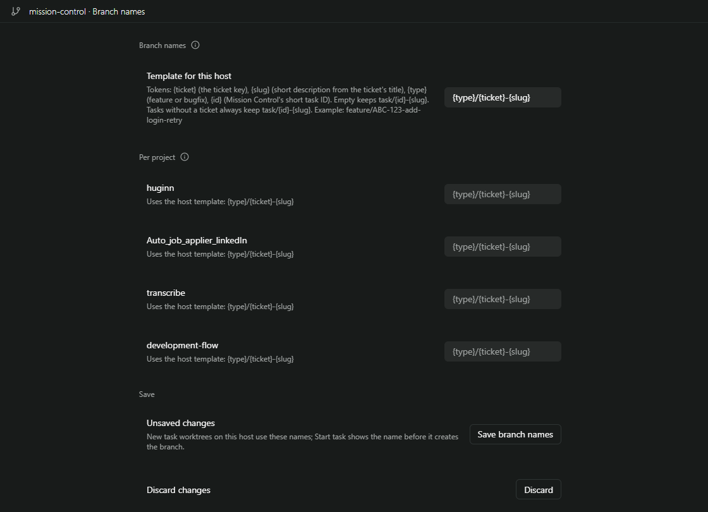
Sets how task branches are named, to match each company's rules. Set a template for the host and, if needed, a different one per project. The tokens are {ticket} (the ticket key), {slug} (a short description), {type} (feature or bugfix) and {id} (Mission Control's short task ID). For example {type}/{ticket}-{slug} gives feature/ABC-123-add-login-retry.
Start task shows the exact branch before creating it, and refuses a name that already exists. Tasks without a ticket keep task/{id}-{slug}.
When a project's paseo.json has branch name guidance, the screen shows it beside that project's template, read-only, with the file it came from. The guidance is advice to compare against; your template still decides the name.
Workflow instructions New
Open Settings → Plugins → Mission Control → Workflow instructions on the intended host. Set separate Intake and Planning guidance under Host defaults, then select a project for any exceptions. Each stage can Inherit host, Add to host, or Replace host. The Effective guidance preview shows what that project will receive.
For a host with vague tickets, an Intake note could say: “Ask me focused questions when acceptance criteria or business context are missing. Reuse context I already supplied.” Planning guidance can name the relevant Confluence space, design references or read-only database checks. Include how to find those sources and what to verify; configure tool connections and credentials separately.
Save instructions writes ordinary Markdown notes in this host's vault: C:\dev-vault\Workflow\host.md and Workflow\Projects\<projectId>.md. The screen shows their exact paths. Save or discard edits before switching scope. A concurrent save from another client preserves your draft and blocks overwriting the newer revision.
Morning check receives the selected project's effective Intake guidance. Task Start, Resume, /mission-task and dev-flow context load both stages. Saved changes reach agents on their next launch, resume or context read; they do not interrupt an active agent. Missing notes use the normal workflow. Invalid notes produce an error, so they can be corrected. Notes guide the agent's judgment; they do not grant new access, tracker writes or delivery permission. Shared workflow skills and repository rules still apply. Unresolved questions use the existing Needs you interaction.
Examples, vault-note editing and verification steps. Visual verification of this new settings screen is pending.
Tools & skills
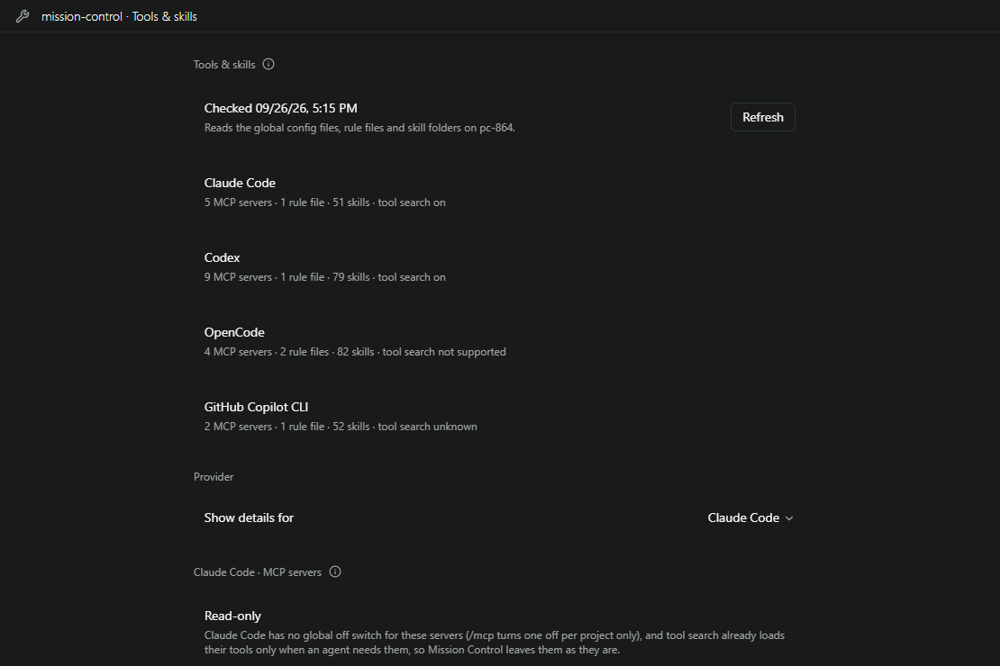
A view of each provider's global setup on this host: Claude Code, Codex, OpenCode and GitHub Copilot CLI. For each one:
- MCP servers: transport, on or off, sign-in state, where it's configured, and a light health check. Local servers are never started; the check only looks for their command. Remote servers get one request with no credentials.
- Rule files such as
CLAUDE.mdandAGENTS.md, with a preview. - Skills by folder, including skills that come from plugins.
- Tool search: whether the provider loads MCP tools only when needed, which keeps agents' context small.
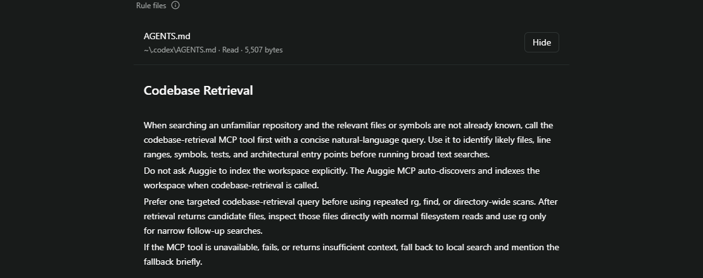
Turning MCP servers off and on
For Codex, OpenCode and Copilot CLI, each server has Turn off or Turn on:
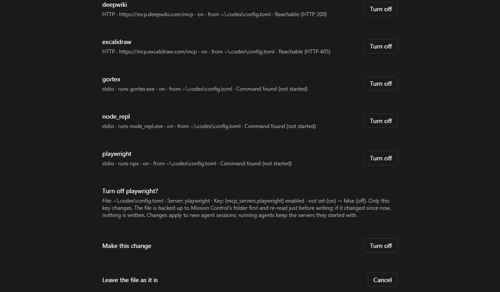
- A confirmation shows the file, the server, the exact key and its old and new value.
- On confirm, the file is backed up to Mission Control's own folder, re-read (nothing is written if it changed meanwhile), replaced in one step, and read back to check the change. For Codex,
codex mcp listmust agree too. - Undo changes just that setting back.
Changes apply to new agent sessions; running agents keep the servers they started with. Claude Code's servers stay read-only: Claude has no global off switch, and its tool search already loads their tools only when needed. Built-in and plugin servers are read-only too, each with its reason shown.
Delivery New

Delivery sets how finished tasks leave the task branch:
- Default for this host: Merge (into your main checkout) or Pull request. Each project can override it; for example, keep Merge on your personal machine, and use Pull request on a work host.
- Pull request title: a template using the same tokens as branch names:
{ticket},{title},{slug},{type}and{id}. The default gives titles likeABC-123: Add login retry; a task without a ticket drops the ticket part. - Each project's forge: detected from its
originremote (GitHub, Azure DevOps or Bitbucket Cloud) and shown with the repository, for example "GitHub · discwl/huginn (detected)". A project's forge can also be set by hand. - Custom hosts: github.com, dev.azure.com, visualstudio.com and bitbucket.org are recognised on their own. Add a company domain (GitHub Enterprise, a self-hosted Azure DevOps Server) or an SSH alias (such as
github-workingit@github-work:org/repo.git) here, and map it to its forge.
Setup New
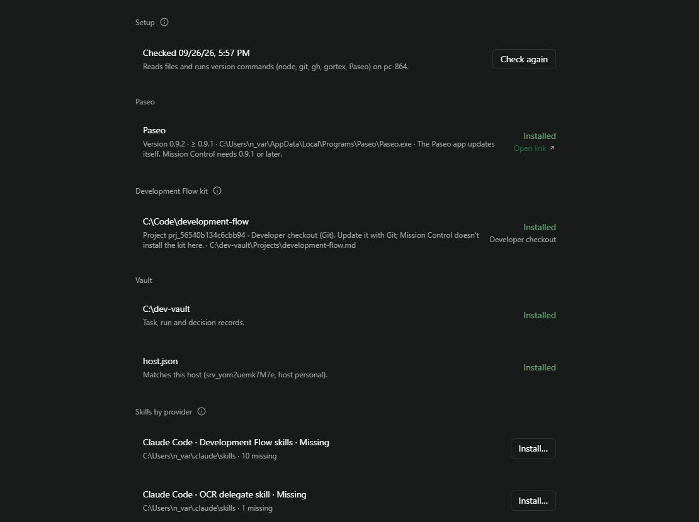
Setup lists everything Mission Control and its agents rely on, with a status for each: Installed, Outdated, Missing, Modified, Not managed or Unknown. Check again re-reads everything; reading changes nothing.
- Paseo and whether it's new enough.
- The Development Flow kit (its skills and scripts). On pc-864 it's your developer checkout, updated with Git. A host that installed Mission Control from GitHub gets a new install folder on every update, so Mission Control keeps a stable kit path that always points at the current install. If a project profile still names one install's folder, Stable kit path → Use it… moves it onto the stable path; then update the skill links it lists. After that, updates no longer break the profile, the skill links or running agents.
- The vault and whether its
host.jsonmatches this host. - Skills by provider: the Development Flow skills and the OpenCode Review delegate skill, for Claude Code, Codex, OpenCode and Copilot CLI. Install… links the missing ones in, after a confirmation that shows the exact paths. It never replaces a folder it didn't create ("Not managed").
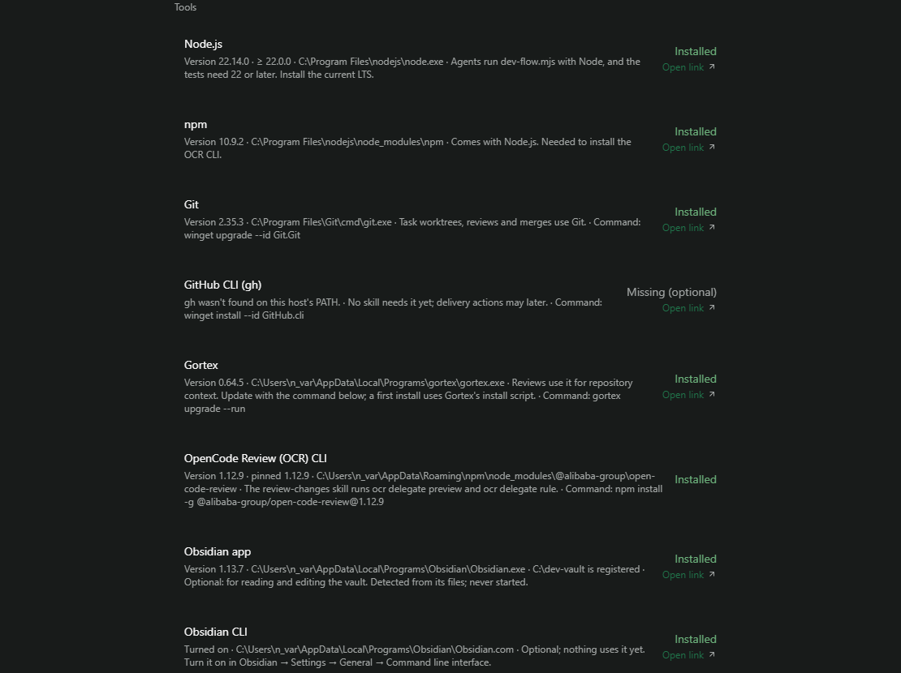
- Tools show their version, why they're needed, and the exact command or link: Node, npm, Git, Gortex, and Obsidian and its CLI (detected from their files; Obsidian is never started).
- Forge tools appear only for the forges your projects use: the GitHub CLI (
gh), the Azure CLI (az) with its azure-devops extension, and Bitbucket Cloud credentials. Each shows whether it's signed in, with the command to install it or sign in. The rest are listed under "Not shown", with the reason. - The OpenCode Review CLI can be installed or updated at its pinned version from here. A slow install keeps running, and the screen follows it. OpenCode Review's rule files are copied only when missing or unchanged since Mission Control wrote them, so your edits are never overwritten.
- Every install is logged under Recent installs.
How a task moves
Keep four things separate: the task's stored status, the run's recorded stage/outcome, the agent's live activity and the workspace's native labels. Status changes and delivery are explicit actions; a recorded event or label does not silently advance the task. A run records its stage as it goes:
| Stored task status | Meaning | Related recorded work |
|---|---|---|
| Inbox | Captured, not shaped yet | none |
| Ready | Clear enough to start | none yet; Start task creates a run at Intake |
| In progress | Being worked on | Plan → Build → Checks → Review → Fixes |
| Blocked | A recorded problem prevents progress | Any stage can record a blocker. Waiting for an answer or a dependency is only called blocked when the record establishes that. |
| In review | The task record says review is pending or in progress | Review or handoff may be completed or waiting; the status is not inferred from a stage's position. |
| Delivered | Accepted and merged or shipped | Delivery |
| Closed | Finished or dropped; kept for history | none active |
Who does what
- Agents verify the task binding, plan, build, validate, obtain independent review, fix findings and write an honest handoff. They perform commit, push or merge actions only when the task's delivery route and your authorization permit them. A label does not grant that authorization.
- You write the criteria, answer decisions, review the changes, and deliver: Merge for personal projects, and draft pull requests for work repositories.
A finding's life
Workspace labels and the agent workflow
A workspace label is a native Paseo tag for the whole workspace. Mission Control reads it for the workspace header and Label filter. It is separate from task status, the run's events and the agent-label metadata used for task/role associations.
You can manage labels through Paseo's native workspace label menu, or instruct the bound task coordinator to do it. The Development Flow kit now has workspace-label actions get, assign, remove and status. Assign can create a missing native label; remove detaches it without deleting the catalog's shared definition or changing its color.
A useful instruction. “For this task's verified host and workspace, inspect the native labels, apply the appropriate lifecycle label when safe, preserve unrelated labels, and record the verified result. If other tasks share the workspace, reconcile its overall status rather than using this task alone.”
The agent checks the exact daemon, workspace, project and real checkout, performs the permitted write, then reads the assignments back. An uncertain write is reported as unconfirmed: inspect the current labels before retrying. Agents never edit Paseo's private label stores, and assigning a label never changes the task record.
Task-bound read command for agents
Use the actual copied task ID and verified server/workspace IDs from the current task binding. The command below only reads; placeholders must be replaced.
node <kitRoot>/scripts/dev-flow.mjs workspace-label \
--task <taskId> --server <serverId> --workspace <workspaceId> \
--cwd <checkoutPath> --action getThe trailing backslashes above illustrate line continuation in a POSIX shell. In PowerShell, enter it on one line or use PowerShell continuation. Use --action assign --label "Review" or --action remove --label "Review" only for an explicitly intended label edit; the guarded lifecycle form is --action status --label "Review" --reason "<recorded reason>".
| Label | When the workflow uses it |
|---|---|
| Ready | There is recorded readiness to start, with the required plan decision resolved. Intake or an unanswered plan question alone is insufficient. |
| In Progress | Authorized planning, implementation, validation or fixes are actively proceeding. |
| Review | Recorded review is underway or the task is awaiting its review decision. A completed review event alone does not approve the revision. |
| Blocked | A recorded blocker actually prevents progress. Do not turn ordinary waiting or an idle agent into a blocker. |
| Paused | You explicitly paused the work. Agent inactivity is not an instruction to pause. |
| Done | Required verification and authorized delivery/closure have actually finished; no other active linked task or agent still needs the workspace. A completed handoff or stage is insufficient. |
Shared workspaces: one coordinator owns their overall label. The guarded status action refuses to replace it when another active task is linked; its Done check also verifies the complete live agent roster and the calling agent's identity. Preserve unrelated tags and user-selected labels. Explicit assignment/removal is available for an intentional coordinator/user choice; it is not an automatic override of shared-workspace state.
The nine skills now follow this policy from check-environment → intake-task → plan-task → execute-task → validate-changes → review-changes → fix-findings → prepare-delivery → write-handoff. Reviewers remain read-only and report a proposed label to the coordinator. Resume and handoff reconcile recorded versus live state and retain a concrete next action. Label failure is recorded separately from an implementation blocker.
Verified on the personal host with Paseo 0.10.2: temporary native label creation, assignment, removal and cleanup; 29 script tests and plugin typecheck passed. The adapter uses an exported internal client API with capability checks because the public plugin SDK/MCP agent-label interface is different. Future versions may need adapter updates. The nine installed Codex skill folders are links to the updated repository; already-running agents keep their loaded context until the instructions are read again.
Screenshot coverage
All photographs of the interface in this guide are real screenshots, embedded in the standalone HTML. Existing captures from the September 29 guide edition remain for areas that have not been recaptured. Two user-supplied images were added for compact activity and linked tasks. They document the layout during this discussion, before the later heading/copy-button, Refresh alignment and label-task status changes.
- Added: collapsed Activity/Decisions/Artifacts detail view, and active linked tasks with completed history folded away.
- Existing edition: navigation, workspace/task lists, launcher, Attention decisions, Review, Docs, Mission, Morning check and captured settings/setup screens.
- Still to capture: final task-status badge and copy icon, clickable wiki links/tables, customized Mission ordering, Project Git settings, the Agents panel, Delivery settings, the current Review workspace tab and redesigned file/folder actions modal, and the orchestrator bubbles, Host agents tab and review list. A pending placeholder means the screenshot is unavailable, not that the feature is unimplemented.
- Device coverage: resizing this HTML guide checks the guide's layout only. Native desktop/phone visual and navigation verification has not been performed in this refresh.
Deployment and verification limits
This guide describes the current local checkout, including uncommitted changes, rather than promising a deployment schedule. Install/reload Mission Control and set up the owning vault/profile on each host where you need host-local tasks, reviews and tracker imports. A connected host's agent roster alone does not prove that host has this plugin build or the updated workflow skills.
For the agent-managed label task, implementation and its relevant checks are complete, but independent review and delivery remain pending. Its task status is now In review; the shared workspace retains In Progress. This distinction is expected. Native visual verification remains separate from script tests.
Troubleshooting and where things live
| Situation | What to do |
|---|---|
| A change to Mission Control doesn't show | Reload the plugin: Settings → Plugins → Mission Control → Reload, or paseo plugin reload mission-control. paseo plugin logs mission-control should end with "Plugin ready". |
| A task is missing from the list | Its task.md may be invalid (for example criteria over 4,000 characters). The list skips it and shows a warning naming the file. |
| Starting a task seems slow | Creating a worktree can take a minute. The panel shows "Starting the task…" and updates by itself. |
| Merge refuses | Its message says why: files changed since approval (request a fresh review), the agent is busy, or the main checkout has uncommitted changes. Fix that and press Check again. |
| Open PR says a tool is missing or not signed in | Settings → Setup lists gh, az or Bitbucket credentials for the forges your projects use, with the exact install or sign-in command. |
| Clean up refuses | Its message says why: the local branch has work the PR didn't include, or the worktree has uncommitted changes. Nothing was changed; push or discard that work first. |
| An answer says "Saved, not sent" | The agent was busy. Press Send to agent once it's idle. |
| Activity says completed, but the task is In review | The recorded update and stored task status are separate. Inspect Decisions for approval and Artifacts for the report; a completion checkbox does not establish acceptance of the current revision. |
| An evidence document is not included | The returned detail view is bounded. Inspect the exact task/run documents in Docs. Do not assume the file is missing until its actual target is checked. |
| A wiki link cannot open | Check its exact vault path, host and optional extension. Missing or ambiguous targets should give feedback; use the vault tree to select the exact record. Save/discard an unsaved note before leaving it. |
| A label write is unconfirmed | Ask the bound agent to read workspace-label get before retrying. A timeout may occur after a write; do not blindly replay it or use a label as task approval. |
| The guarded status action refuses a shared workspace | Another active linked task or agent prevents replacing the overall status. Have the workspace coordinator reconcile it; the individual task's state is not the whole workspace's state. |
Where things live on each host:
C:\dev-vault: tasks, runs, decisions, reviews, handoffs and daily reports.C:\dev-vault\Projects: one profile per project, including where the Development Flow kit is.~\.paseo\plugin-data\mission-control\config-backups: backups taken before any MCP setting changes.- Task worktrees: Paseo's worktree folder, one per task, removed when the task is merged and cleaned up.